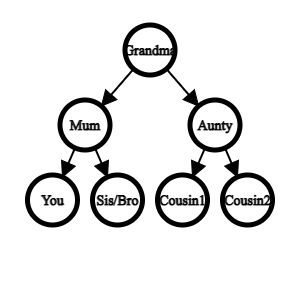

Parent, Child and Sibling Nodes
Some commonly used terms in trees are parent, child and sibling nodes. These terms come from the concept of a family tree. Think of the graph on the left as your mums’ side of the family:
Node A would represent your grandma
Node B and C would represent your mum and aunty respectively
Node D and E would represent you and your brother or sister respectively
Node F and G would represent your cousins
You would say that your grandma is the parent of your mum and aunty, hence A is the parent node of B and C who in turn, are the child nodes of A. You would also say that your mum and aunty are siblings and therefore node B and C are sibling nodes.
Here is an example of the graph being applied to the family tree

As shown from the family tree concept, any node that has a directed edge pointing towards another node is the parent of that node and that node is now a child node. In trees, we also refer to nodes with no children as the external nodes of the tree or the leaves of the tree as there is nothing branching out from them. As such, any other node that is not an external node is an internal node as they exist inside the tree.Note that any paths in a tree must go downwards due to the direction of the edges